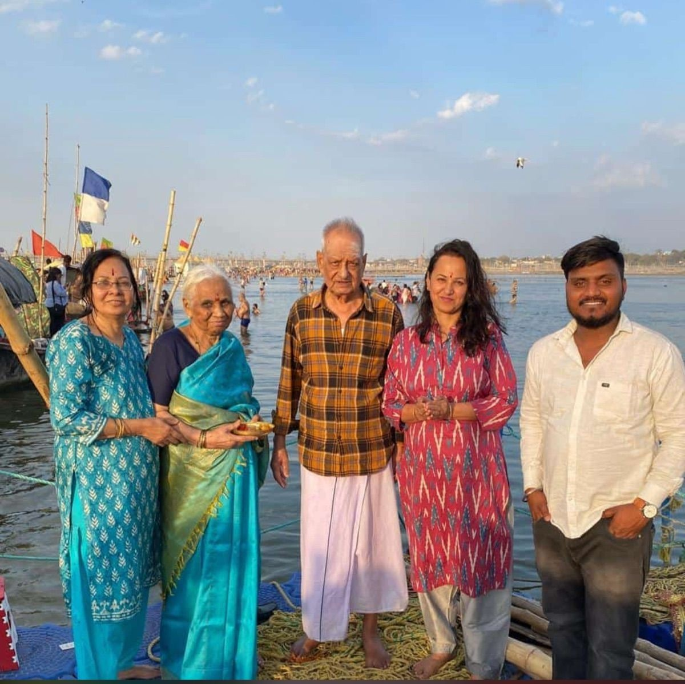

Home / Blog / Varanasi to Gaya Pind Daan

In this guide
Performing Pind Daan (ancestral Shradh rituals) is considered one of the most sacred duties in Hindu culture, helping the souls of departed ancestors achieve liberation (Moksha). According to scriptures, the full Pind Daan ritual chain is only complete when performed across the **Holy Trinity of Pind Daan**: **Kashi (Varanasi)**, **Prayag (Prayagraj)**, and **Gaya (Bihar)**. This guide covers travel distances, road highway routes, direct trains, taxi booking options, and estimated ritual costs.
Spiritual Significance of Kashi, Prayag & Gaya
Devotees perform rituals across these three specific sites to ensure salvation for three generations of ancestors:
- Prayag (Triveni Sangam): Devotees perform the initial shradh and take a holy dip at the confluence of Ganga, Yamuna, and Saraswati.
- Kashi (Pishach Mochan Kund & Ganga Ghats): Shraddha rituals are performed here to free souls from any negative bonds or residual karma.
- Gaya (Vishnupad Temple & Falgu River): The final and most critical step. Lord Rama himself performed Pind Daan for King Dasharatha here. The footprints of Lord Vishnu (Vishnupad) and the Falgu River are the primary ritual spots.
Varanasi to Gaya Distance & Highway Route
The road distance between Varanasi and Gaya is approximately **250 kilometers (155 miles)**. The entire route is connected via **NH-19** (formerly NH-2 / Grand Trunk Road), which is a highly maintained 6-lane highway.
Direct Route: Varanasi → Mohania → Sasaram Bypass → Aurangabad → Gaya City.
- Average Travel Time: 5 to 5.5 hours by a private AC cab.
- Road Conditions: Smooth driving surface, with modern toll plazas, food courts, and fuel stops along the highway.
- Varanasi to Gaya Taxi Fares (One-Way):
- Sedan (Dzire/Etios): ~₹5,000
- SUV (Ertiga): ~₹6,500
- Premium SUV (Innova Crysta): ~₹8,500
Direct Train Schedules & Timings
Direct trains run daily between Varanasi Junction (BSB) or Pandit Deen Dayal Upadhyaya Junction (DDU) and Gaya Junction (GAYA). The train journey takes about **3.5 to 4.5 hours**.
| Train Name & Number | Varanasi Departure | Gaya Arrival | Frequency |
|---|---|---|---|
| Budhpurnima Express (14224) | 08:30 PM | 01:30 AM | Daily |
| Doon Express (13010) | 04:15 PM | 09:15 PM | Daily |
| Ganga Satluj Express (13308) | 10:20 PM | 03:15 AM | Daily |
Gaya Pind Daan Ritual Costs & Guidelines
Devotees should be aware of official ritual costs at Gaya to avoid scams by local unregistered priests:
- Puja Samagri & Pandit Dakshina:
- Ek-Drishti Shradh (performed at a single primary point like Vishnupad Temple): ₹1,100 to ₹2,100.
- Detailed 17-Dedi Shradh (covers multiple locations including Falgu River, Akshayavat, and Vishnupad): ₹3,500 to ₹5,100.
- Required Samagri: Barley flour (Jau ka Atta), black sesame seeds (Kala Til), Kusha grass, honey, curd, and milk. These are usually provided by the coordinating pandit.
- Best Months: The 15-day period of **Pitru Paksha** (usually September-October) is considered the most auspicious, but Pind Daan can be performed throughout the year on Amavasya or during specific tithis.
All-Inclusive Combined Yatra Packages
Since the rituals involve multiple cities (Varanasi, Prayagraj, and Gaya), coordinating transportation, hotel bookings, and trusted pandits in each location can be challenging. Our **Kashi Prayag Gaya Pind Daan Tour Packages** cover every single detail:
- Trusted Local Pujaris: We pre-book certified, verified pandits in Prayagraj, Varanasi, and Gaya who guide you through the rituals properly.
- Dedicated AC Cab Transfers: Private vehicles with professional drivers for the entire Varanasi-Prayagraj-Gaya-Varanasi circuit.
- Corridor Hotels: Stays at comfortable, family-friendly hotels located within walking distance of the temples.
- Complete Itinerary Management: Custom road transfers starting from Varanasi airport/station, including city sightseeing (Kashi Vishwanath Temple, Ganga Aarti, Sarnath) along with the pujas.
Plan Your Kashi Prayag Gaya Pind Daan Yatra
Book all-inclusive family yatra packages with verified local pandits and AC private cabs.